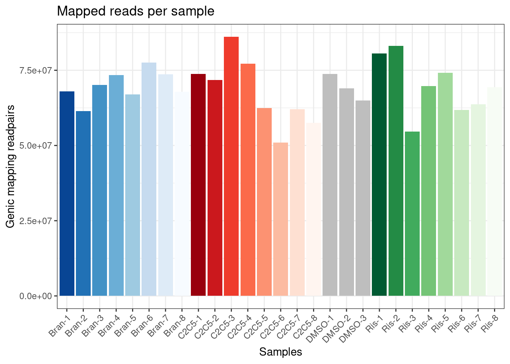
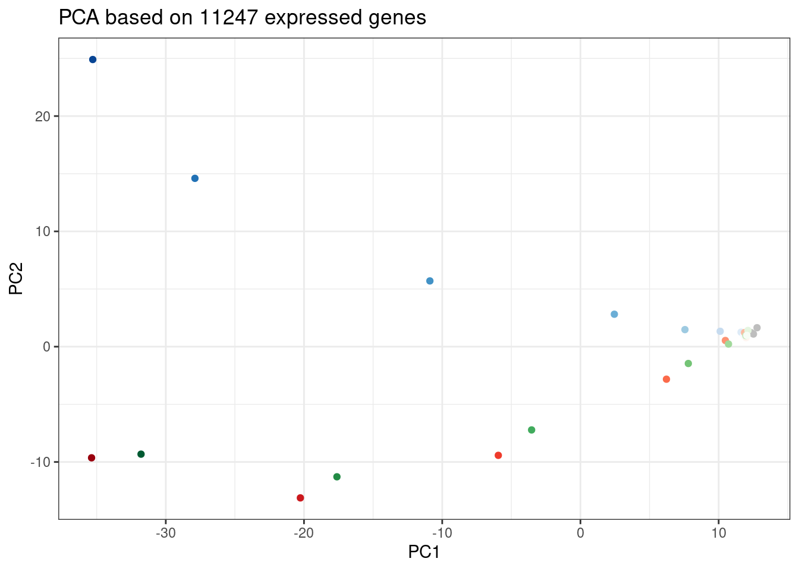
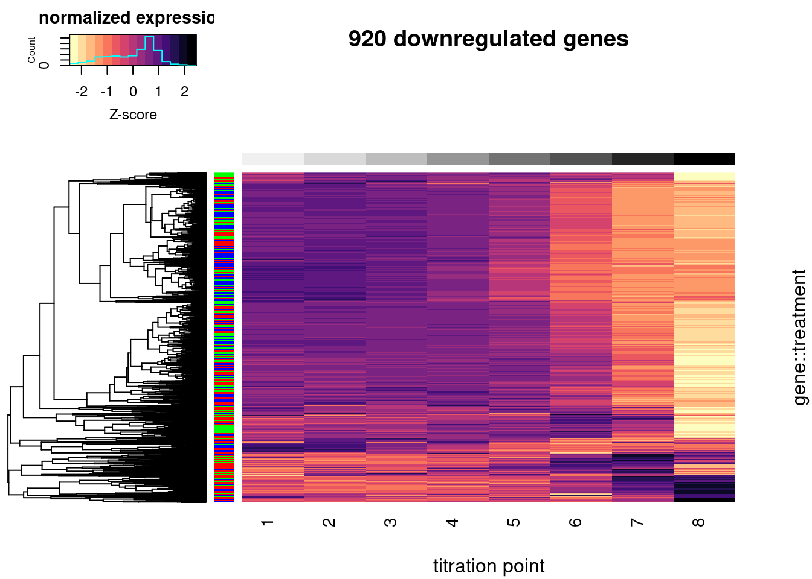
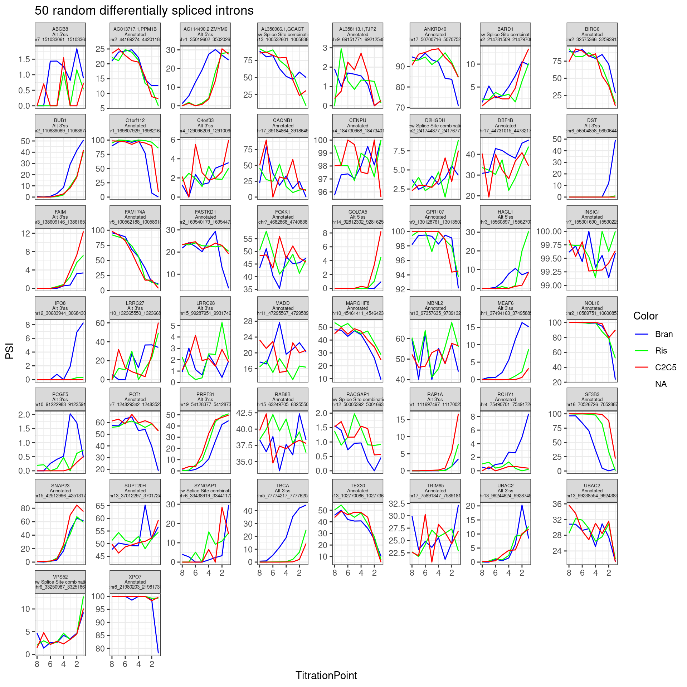

First glance at titration series
Last updated: 2022-07-06
Checks: 6 1
Knit directory: 20211209_JingxinRNAseq/analysis/
This reproducible R Markdown analysis was created with workflowr (version 1.6.2). The Checks tab describes the reproducibility checks that were applied when the results were created. The Past versions tab lists the development history.
The R Markdown file has staged changes. To know which version of the R Markdown file created these results, you’ll want to first commit it to the Git repo. If you’re still working on the analysis, you can ignore this warning. When you’re finished, you can run wflow_publish to commit the R Markdown file and build the HTML.
Great job! The global environment was empty. Objects defined in the global environment can affect the analysis in your R Markdown file in unknown ways. For reproduciblity it’s best to always run the code in an empty environment.
The command set.seed(19900924) was run prior to running the code in the R Markdown file. Setting a seed ensures that any results that rely on randomness, e.g. subsampling or permutations, are reproducible.
Great job! Recording the operating system, R version, and package versions is critical for reproducibility.
Nice! There were no cached chunks for this analysis, so you can be confident that you successfully produced the results during this run.
Great job! Using relative paths to the files within your workflowr project makes it easier to run your code on other machines.
Great! You are using Git for version control. Tracking code development and connecting the code version to the results is critical for reproducibility.
The results in this page were generated with repository version e6f410c. See the Past versions tab to see a history of the changes made to the R Markdown and HTML files.
Note that you need to be careful to ensure that all relevant files for the analysis have been committed to Git prior to generating the results (you can use wflow_publish or wflow_git_commit). workflowr only checks the R Markdown file, but you know if there are other scripts or data files that it depends on. Below is the status of the Git repository when the results were generated:
Ignored files:
Ignored: .DS_Store
Ignored: .Rhistory
Ignored: .Rproj.user/
Ignored: ._.DS_Store
Ignored: analysis/figure/
Ignored: code/.DS_Store
Ignored: code/._.DS_Store
Ignored: code/._DOCK7.pdf
Ignored: code/._DOCK7_DMSO1.pdf
Ignored: code/._DOCK7_SM2_1.pdf
Ignored: code/._FKTN_DMSO_1.pdf
Ignored: code/._FKTN_SM2_1.pdf
Ignored: code/._MAPT.pdf
Ignored: code/._PKD1_DMSO_1.pdf
Ignored: code/._PKD1_SM2_1.pdf
Ignored: code/.snakemake/
Ignored: code/5ssSeqs.tab
Ignored: code/Alignments/
Ignored: code/ChemCLIP/
Ignored: code/ClinVar/
Ignored: code/DE_testing/
Ignored: code/DE_tests.mat.counts.gz
Ignored: code/DE_tests.txt.gz
Ignored: code/Fastq/
Ignored: code/FastqFastp/
Ignored: code/Meme/
Ignored: code/OMIM/
Ignored: code/Session.vim
Ignored: code/SplicingAnalysis/
Ignored: code/featureCounts/
Ignored: code/log
Ignored: code/logs/
Ignored: code/rules/.ProcessTitrationSeries.smk.swp
Ignored: code/scratch/
Ignored: data/._Hijikata_TableS1_41598_2017_8902_MOESM2_ESM.xls
Ignored: data/._Hijikata_TableS2_41598_2017_8902_MOESM3_ESM.xls
Ignored: output/._PioritizedIntronTargets.pdf
Unstaged changes:
Modified: analysis/20220629_FirstGlanceTitrationSeries.Rmd
Staged changes:
Modified: analysis/20211216_DifferentialSplicing.Rmd
New: analysis/20220629_FirstGlanceTitrationSeries.Rmd
Modified: analysis/index.Rmd
Modified: code/Snakefile
New: code/config/samples.titrationseries.tsv
New: code/rules/ProcessTitrationSeries.smk
New: code/rules/RNASeqProcessing.smk
Modified: code/rules/common.smk
New: code/rules/pangolin.smk
Note that any generated files, e.g. HTML, png, CSS, etc., are not included in this status report because it is ok for generated content to have uncommitted changes.
There are no past versions. Publish this analysis with wflow_publish() to start tracking its development.
Intro
In order to get a better sense of how these small molecule splicing modifiers are different, we need to account for the different effective concentrations/potencies that these drugs were administered in our first experiment. For example, if CUOME was administered at a higher concentration, would it start to resemeble risdiplam at the given concentration? If so, would the effects be similar to risdiplam at all introns/genes or just a subset?
So we decided to perform a titration series and RNA-seq of three molecules:
- C2-C5-1: 1000, 316, 100, 31.6, 10, 3.16, 1, 0.316 nM
- Branaplam: 3,160, 1000, 316, 100, 31.6, 10, 3.16, 1 nM.
- Risdiplam: 10,000, 3,160, 1000, 316, 100, 31.6, 10, 3.16 nM
The libraries were stranded RNA-seq, sequenced to ~60-90M reads per sample. Here I am going to have a first look at the results, after quantifying gene expression with featureCounts. First read in the count table, and do some basic data QC
Gene expression analysis QC
library(tidyverse)
library(edgeR)
library(RColorBrewer)
library(gplots)
library(viridis)
dat <- read_tsv("../code/featureCounts/Counts.titration_series.txt", comment="#") %>%
select(-ends_with("_1")) %>%
rename_at(vars(-(1:6)), ~str_replace(.x, "Alignments/STAR_Align/TitrationExp(.+?)/Aligned.sortedByCoord.out.bam", "\\1")) %>%
select(Geneid, everything(), -c(2:6)) %>%
column_to_rownames("Geneid") %>%
DGEList()
ColorsTreatments <- c("blue"="Bran", "red"="C2C5", "green"="Ris")
Samples <- dat$samples %>%
rownames_to_column("Sample") %>%
separate(Sample, into=c("Treatment", "TitrationPoint"), remove = F, convert = T) %>%
rowwise() %>%
mutate(Color = case_when(
Treatment == "Bran" ~ rev(brewer.pal(n=8, name="Blues"))[TitrationPoint],
Treatment == "C2C5" ~ rev(brewer.pal(n=8, name="Reds"))[TitrationPoint],
Treatment == "Ris" ~ rev(brewer.pal(n=8, name="Greens"))[TitrationPoint],
TRUE ~ "gray"
)) %>%
ungroup() %>%
select(Sample, Treatment, TitrationPoint, lib.size, Color)
ggplot(Samples, aes(x=Sample, y=lib.size, fill=Color)) +
geom_col() +
scale_fill_identity() +
labs(x="Samples", y="Genic mapping readpairs", title="Mapped reads per sample") +
theme_bw() +
theme(axis.text.x = element_text(angle = 45, vjust = 1, hjust=1))
Ok, now let’s check correlation matrix of sample expression profiles and see how they cluster
#Calculate mean cpm and filter for expressed genes
mean.cpm <- dat %>%
cpm(log=T) %>%
apply(1, mean)
ExpressedGeneCounts <- dat[mean.cpm>1,]
#Speaman correlation matrix heatmap for CountsPerMillion expression
ExpressedGeneCounts %>%
cpm(log=T) %>%
cor(method="pearson") %>%
heatmap.2(trace="none", ColSideColors=Samples$Color, RowSideColors = Samples$Color, labRow=Samples$Sample, labCol=Samples$Sample, col=magma(15, direction = -1), key.title="pearson corr", main="CorrelationMatrix from gene expression")
Another way to visualize how samples cluster is to plot them in PC space…
pca.results.expression <- ExpressedGeneCounts %>%
cpm(log=T) %>%
scale() %>%
t() %>%
prcomp()
dim(ExpressedGeneCounts)[1] 11247 27PC.dat <- pca.results.expression$x %>%
as.data.frame() %>%
rownames_to_column("Sample") %>%
select(Sample, PC1, PC2, PC3) %>%
left_join(Samples, by="Sample")
ggplot(PC.dat, aes(x=PC1, y=PC2, color=Color)) +
geom_point() +
scale_color_identity() +
theme_bw() +
labs(title = "PCA based on 11247 expressed genes")
ggplot(PC.dat, aes(x=PC2, y=PC3, color=Color)) +
geom_point() +
scale_color_identity() +
theme_bw() +
labs(title = "PCA based on 11247 expressed genes")Again, we can see the low concentration doses resemble DMSO control. Out of this PC it seems that branaplam effects are distinct from C2C5/risdiplam effects…
Gene expression dose-response plots
Now let’s make some of the plots yang was suggesting: - get DE down-regulated genes from previous analysis at set concentration - plot dose-response curves for these genes as heatmap, and allow heatmap function’s default distance matrix function and hierachal clustering alogorithm sort the rows of genes to pick out how some genes might have different effects than others to different treatments
DE.results <- read_tsv("../code/DE_testing/Results.txt.gz") %>%
separate(Geneid, into=c("EnsemblID", "GeneSymbol"), sep = "_")
DE.genes <- DE.results %>%
filter(FDR<0.01) %>%
filter(logFC < -1) %>%
distinct(EnsemblID) %>%
pull(EnsemblID)
ensembl_to_symbols <- DE.results %>%
distinct(EnsemblID, GeneSymbol) %>%
deframe()
length(intersect(DE.genes, rownames(ExpressedGeneCounts$counts)))[1] 920Plot.Titration.Heatmap.dat <- ExpressedGeneCounts %>%
cpm(log=F) %>%
as.data.frame() %>%
rownames_to_column("gene") %>%
filter(gene %in% DE.genes) %>%
gather("sample", "cpm", -gene) %>%
separate(sample, into=c("Treatment", "TitrationPoint"), remove = F, convert = T) %>%
select(-sample) %>%
pivot_wider(names_from = "TitrationPoint", values_from = "cpm") %>%
unite(Rowname, gene, Treatment, remove = F) %>%
drop_na() %>%
mutate(Color = case_when(
Treatment == "Bran" ~ "blue",
Treatment == "C2C5" ~ "red",
Treatment == "Ris" ~ "green")) %>%
select(Rowname, 11:3, everything())
Plot.Titration.Heatmap.dat %>%
column_to_rownames("Rowname") %>%
select(1:8) %>%
as.matrix() %>%
t() %>%
scale(scale=T, center=T) %>%
t() %>%
heatmap.2(trace="none", labRow=F, labCol=T, dendrogram="row", Colv=F, RowSideColors = Plot.Titration.Heatmap.dat$Color, col=magma(15, direction = -1), ColSideColors = brewer.pal(n = 9, name = "Greys")[2:9], symbreaks = FALSE, main="920 downregulated genes", xlab="titration point", ylab="gene::treatment", key.title="normalized expression", key.xlab="Z-score")
#, breaks=seq(0,1,length.out=16)In the plot above, rows represent a gene::drug pair and row side colors represent the treatment drug. Z-score normalized gene expression across the increasing doses (columns). Only 920 genes that were DE downregulated in the original experiment were included (FDR<1%, and log2FC<-1) and also expressed in this experiment (mean(log(cpm)) > 1).
Lastly, let’s pick a couple genes that distinguish the branaplam effect from the C2/C5 effect, and plot dose-response curves specifically for that.
First let’s re-create the PCA plot from those DE genes
pca.results.DE.expression <- ExpressedGeneCounts %>%
cpm(log=T) %>%
as.data.frame() %>%
rownames_to_column("gene") %>%
filter(gene %in% DE.genes) %>%
column_to_rownames("gene") %>%
as.matrix() %>%
scale() %>%
t() %>%
prcomp()
screeplot(pca.results.DE.expression)PC.dat <- pca.results.DE.expression$x %>%
as.data.frame() %>%
rownames_to_column("Sample") %>%
select(Sample, PC1, PC2, PC3) %>%
left_join(Samples, by="Sample")
ggplot(PC.dat, aes(x=PC1, y=PC2, color=Color)) +
geom_point() +
scale_color_identity() +
theme_bw() +
labs(title = "PCA based on 920 DE genes")ggplot(PC.dat, aes(x=PC2, y=PC3, color=Color)) +
geom_point() +
scale_color_identity() +
theme_bw() +
labs(title = "PCA based on 920 DE genes")Let’s pick some genes with high loadings in PC2, and plot the dose response. The facet titles will be the gene, followed by the sign of the PC2 loading.
DE.GenesOrderedBy.PC2 <- pca.results.DE.expression$rotation %>%
as.data.frame() %>%
rownames_to_column("gene") %>%
select(gene, PC2) %>%
arrange(desc(abs(PC2)))
Genes.to.plot <- DE.GenesOrderedBy.PC2 %>%
slice(1:50)
ExpressedGeneCounts %>%
cpm(log=F) %>%
as.data.frame() %>%
rownames_to_column("gene") %>%
filter(gene %in% Genes.to.plot$gene) %>%
gather("sample", "cpm", -gene) %>%
separate(sample, into=c("Treatment", "TitrationPoint"), remove = F, convert = T) %>%
select(-sample) %>%
mutate(Color = case_when(
Treatment == "Bran" ~ "blue",
Treatment == "C2C5" ~ "red",
Treatment == "Ris" ~ "green")) %>%
inner_join(DE.GenesOrderedBy.PC2, by="gene") %>%
mutate(gene = recode(gene, !!!ensembl_to_symbols)) %>%
mutate(FacetLabel = paste(gene, sign(PC2), sep='\n')) %>%
ggplot(aes(x=TitrationPoint, y=cpm, color=Color)) +
geom_line() +
scale_color_identity(labels=ColorsTreatments, guide="legend") +
scale_x_reverse() +
facet_wrap(~FacetLabel, scales = "free_y") +
labs(title = "dose response of top50 DE genes by PC2 loading") +
theme_bw()Let’s write out the list of genes by PC2 loading for Jingxin
DE.GenesOrderedBy.PC2 %>%
mutate(gene = recode(gene, !!!ensembl_to_symbols)) %>%
write_tsv("../code/scratch/DownregulatedGenesSortedByPC2Loading.tsv")Let’s replot the heatmap but order the rows by treatment and then by gene loadings in PC2, so as to highlight how some genes have different effects in branaplam. Only plot the top30 genes by PC2 loadings.
Plot.Titration.Heatmap.dat.rearranged <- pca.results.DE.expression$rotation %>%
as.data.frame() %>%
rownames_to_column("gene") %>%
select(gene, PC2) %>%
right_join(Plot.Titration.Heatmap.dat, by="gene") %>%
mutate(gene = recode(gene, !!!ensembl_to_symbols)) %>%
arrange(Treatment, desc(abs(PC2))) %>%
group_by(Treatment) %>%
slice(1:30) %>%
# slice(tail(row_number(), 30)) %>%
ungroup() %>%
arrange(Treatment, PC2) %>%
select(-gene, -PC2, everything())
Plot.Titration.Heatmap.dat.rearranged %>%
column_to_rownames("Rowname") %>%
select(-gene) %>%
select(1:8) %>%
as.matrix() %>%
t() %>%
scale(scale=T, center=T) %>%
t() %>%
heatmap.2(trace="none", labCol=NULL, dendrogram="none", Colv=F, Rowv=F, RowSideColors = Plot.Titration.Heatmap.dat.rearranged$Color, col=magma(15, direction = -1), ColSideColors = brewer.pal(n = 9, name = "Greys")[2:9], symbreaks = FALSE, labRow=Plot.Titration.Heatmap.dat.rearranged$gene, cexRow=0.25, offsetRow=0.1, main="top30 genes by PC2 loading", xlab="titration point", ylab="gene::treatment", key.title="normalized expression", key.xlab="Z-score")#, breaks=seq(-30,30,length.out=16)Let’s check out the dose-response for a couple genes of interest now:
GenesOfInterest <- c("MAPT", "SNCA", "SMN2", "HTT", "GALC", "FOXM1", "STAT1", "AKT3", "PDGFRB")
dat %>%
cpm(log=F) %>%
as.data.frame() %>%
rownames_to_column("gene") %>%
mutate(gene = recode(gene, !!!ensembl_to_symbols)) %>%
filter(gene %in% GenesOfInterest) %>%
gather("sample", "cpm", -gene) %>%
separate(sample, into=c("Treatment", "TitrationPoint"), remove = F, convert = T) %>%
select(-sample) %>%
mutate(Color = case_when(
Treatment == "Bran" ~ "blue",
Treatment == "C2C5" ~ "red",
Treatment == "Ris" ~ "green")) %>%
ggplot(aes(x=TitrationPoint, y=cpm, color=Color)) +
geom_line() +
scale_color_identity(labels=ColorsTreatments, guide="legend") +
scale_x_reverse() +
facet_wrap(~gene, scales = "free_y") +
labs(title = "dose response of genes of interest") +
theme_bw()Splicing quantification QC
Now let’s also plot some dose response for previously identified differential splicing events. First read in the splice junction count table (created from leafcutter clustering, using only these titration experiment samples for clustering), and do some quick QC
counts <- read.table("../code/SplicingAnalysis/leafcutter/clustering/autosomes_titrationseries/leafcutter_perind_numers.counts.gz", sep = ' ', header=T) %>%
rownames_to_column("intron") %>%
gather(key="Sample", value="Count", -intron)
PSI.table <- counts %>%
mutate(Cluster = str_replace(intron, ".+:(.+)$", "\\1")) %>%
group_by(Sample, Cluster) %>%
mutate(ClusterSum = sum(Count)) %>%
mutate(PSI = Count/ClusterSum * 100) %>%
ungroup()
PSI.table %>%
select(intron, Sample, PSI) %>%
spread(key = Sample, value = PSI) %>%
column_to_rownames("intron") %>%
drop_na() %>%
cor(method="spearman") %>%
heatmap.2(trace="none", ColSideColors=Samples$Color, RowSideColors = Samples$Color, labRow=Samples$Sample, labCol=Samples$Sample, col=magma(30, direction = -1), key.title="pearson corr", main="Correlation matrix from splicing")Ok similar clustering pattern arises, with samples clustering primarily by titration point. Keep in mind this is all junctions from leafcutter count table, no additional filtering for well expressed or differentially spliced junctions.
Similar to what I did with the expression, now let’s pick some of the previously differentially spliced introns, and plot the samples in PC space and also plot some dose-response curves…
First, read in the previous differential splicing results…
cluster_sig_files <- list.files("../code/SplicingAnalysis/leafcutter/differential_splicing", "*_cluster_significance.txt", full.names = T)
effect_sizes_files <- list.files("../code/SplicingAnalysis/leafcutter/differential_splicing", "*_effect_sizes.txt", full.names = T)
treatments <- str_replace(cluster_sig_files, ".+/(.+?)_cluster_significance.txt", "\\1")
cluster.sig <- map(cluster_sig_files, read_tsv) %>%
set_names(cluster_sig_files) %>%
bind_rows(.id="f") %>%
mutate(treatment = str_replace(f, ".+/(.+?)_cluster_significance.txt", "\\1")) %>%
select(-f)
effect_sizes <- map(effect_sizes_files, read_tsv) %>%
set_names(effect_sizes_files) %>%
bind_rows(.id="f") %>%
mutate(treatment = str_replace(f, ".+/(.+?)_effect_sizes.txt", "\\1")) %>%
select(-f) %>%
unite("psi_treatment", treatments, sep=" ", na.rm=T) %>%
mutate(psi_treatment = as.numeric(psi_treatment),
cluster = str_replace(intron, "(.+?:).+:(.+?)", "\\1\\2")) %>%
mutate(deltapsi = deltapsi*-1,
logef = logef *-1)
#Combine effect sizes and significance for all samples into single df
leafcutter.ds <- effect_sizes %>%
left_join(cluster.sig, by=c("treatment", "cluster"))
# read in some annotations about these splice sites
SpliceTypeAnnotations <- read_tsv("../code/SplicingAnalysis/leafcutter/JuncfilesMerged.annotated.basic.bed.gz") %>%
unite(Intron, chrom, start, end) %>%
distinct(Intron, .keep_all = T) %>%
select(Intron, strand, exons_skipped, anchor, gene_names, gene_ids, splice_site, strand) %>%
mutate(IntronType = recode(anchor, A="Alt 5'ss", D="Alt 3'ss", DA="Annotated", N="New Intron", NDA="New Splice Site combination"))
head(SpliceTypeAnnotations)# A tibble: 6 x 8
Intron strand exons_skipped anchor gene_names gene_ids splice_site
<chr> <chr> <dbl> <chr> <chr> <chr> <chr>
1 chr1_… + 1 DA DDX11L1 ENSG000… GT-AG
2 chr1_… + 6 N <NA> <NA> GT-AG
3 chr1_… - 21 N <NA> <NA> GT-AG
4 chr1_… - 0 N <NA> <NA> GT-AG
5 chr1_… - 0 N <NA> <NA> GT-AG
6 chr1_… - 0 N <NA> <NA> GT-AG
# … with 1 more variable: IntronType <chr>FivePrimeSS <- read_tsv("../code/SplicingAnalysis/leafcutter/JuncfilesMerged.annotated.basic.bed.5ss.tab.gz", col_names = c("Intron", "DonorSeq", "DonorScore")) %>%
mutate(Intron = str_replace(Intron, "(.+)_.+?::.+$", "\\1"))
SpliceTypeAnnotations <- SpliceTypeAnnotations %>%
inner_join(FivePrimeSS, by="Intron")
leafcutter.ds.annotated <- leafcutter.ds %>%
mutate(Intron=str_replace(intron, "(.+?):(.+?):(.+?):.+", "\\1_\\2_\\3")) %>%
inner_join(SpliceTypeAnnotations, by="Intron") %>%
mutate(UpstreamOfDonor2BaseSeq = substr(DonorSeq, 3, 4)) Ok now pick some differentially spliced junctions to plot… Perhaps only consider introns that are significant, large effect size, and pass some minimum read count across this new dataset (say, at least 30 junction reads across the treatment titration).
DifferentiallySplicedIntrons <- leafcutter.ds.annotated %>%
filter(abs(logef) > 2 & abs(psi_treatment) > 0.02 & p.adjust < 0.01) %>%
distinct(Intron, .keep_all=T)
PSI.table.filtered <- PSI.table %>%
mutate(Intron = str_replace(intron, "^(.+?):(.+?):(.+?):clu_.+$", "\\1_\\2_\\3")) %>%
filter(Intron %in% DifferentiallySplicedIntrons$Intron) %>%
mutate(Sample = str_replace(Sample, "TitrationExp(.+?)\\.(.+?)$", "\\1-\\2")) %>%
left_join(Samples, by="Sample") %>%
group_by(Intron, Treatment) %>%
mutate(IntronSum = sum(Count)) %>%
ungroup() %>%
mutate(PassFilterInTreatment = IntronSum >= 30) %>%
group_by(Intron) %>%
filter(any(PassFilterInTreatment)) %>%
ungroup() %>%
filter(!is.na(PSI))After doing that filtering, how many introns are left in the dataset:
PSI.table.filtered %>%
distinct(Intron) %>% nrow()[1] 3387Now let’s remake that correlation matrix heatmap using just these junctions… Also plot in PC space.
PSI.table.filtered.mat <- PSI.table.filtered %>%
select(Intron, PSI, Sample) %>%
pivot_wider(names_from="Sample", values_from="PSI", id_cols="Intron", values_fill=0) %>%
column_to_rownames("Intron") %>% as.matrix()
PSI.table.filtered.mat %>%
cor(method="spearman") %>%
heatmap.2(trace="none", ColSideColors=Samples$Color, RowSideColors = Samples$Color, labRow=Samples$Sample, labCol=Samples$Sample, col=magma(30, direction = -1), key.title="pearson corr")pca.results.splicing <- PSI.table.filtered.mat %>%
scale() %>%
t() %>%
prcomp()
PC.dat <- pca.results.splicing$x %>%
as.data.frame() %>%
rownames_to_column("Sample") %>%
select(Sample, PC1, PC2, PC3) %>%
left_join(Samples, by="Sample")
ggplot(PC.dat, aes(x=PC1, y=PC2, color=Color)) +
geom_point() +
scale_color_identity() +
theme_bw() +
labs(title = "PCA using 3387 differentially spliced introns")ggplot(PC.dat, aes(x=PC2, y=PC3, color=Color)) +
geom_point() +
scale_color_identity() +
theme_bw() +
labs(title = "PCA using 3387 differentially spliced introns")
Wow, that looks just like how the samples were in gene expression PC space. It’s really striking. I’m pretty sure there are no silly bugs though. So again, the within each treatment clearly go in the order of the dose given, but also it’s obvious that branaplam has distinct effects from the other two.
Splicing dose-response plots
Let’s plot a few dose response curves… Just as before, to highlight differences between branaplam and the other two, let’s pick the introns with high loadings in PC2.
Introns.to.plot <- pca.results.splicing$rotation %>%
as.data.frame() %>%
rownames_to_column("Intron") %>%
select(Intron, PC2) %>%
arrange(desc(abs(PC2))) %>%
slice(1:50)
PSI.table.filtered.mat %>%
as.data.frame() %>%
rownames_to_column("Intron") %>%
inner_join(Introns.to.plot, by="Intron") %>%
# mutate(gene = recode(gene, !!!ensembl_to_symbols)) %>%
gather("sample", "PSI", -Intron, -PC2) %>%
separate(sample, into=c("Treatment", "TitrationPoint"), remove = F, convert = T) %>%
select(-sample) %>%
mutate(Color = case_when(
Treatment == "Bran" ~ "blue",
Treatment == "C2C5" ~ "red",
Treatment == "Ris" ~ "green")) %>%
left_join(
(leafcutter.ds.annotated %>%
select(Intron, gene_names,IntronType)),
by="Intron") %>%
mutate(Facet_label = paste(gene_names,IntronType,Intron, sign(PC2), sep="\n")) %>%
ggplot(aes(x=TitrationPoint, y=PSI, color=Color)) +
geom_line() +
scale_color_identity(labels=ColorsTreatments, guide="legend") +
scale_x_reverse() +
labs(title="Top50 differnentially spliced introns by PC2 loading") +
facet_wrap(~Facet_label, scales = "free_y") +
theme_bw()The facet labels indicate the host gene,, the “type” of intron (annotated, cryptic 3’ss, etc), the intron coordinates, and the sign of PC2 loading (1 indicating more branaplam specific splicing positive effect (enhancement), -1 indicating branaplam specific splicing negative effect).
Lastly, let’s plot the top 30 PC2 introns heatmap style
Plot.Titration.Heatmap.dat.rearranged <- pca.results.splicing$rotation %>%
as.data.frame() %>%
rownames_to_column("Intron") %>%
select(Intron, PC2) %>%
right_join(
(PSI.table.filtered.mat %>%
as.data.frame() %>%
rownames_to_column("Intron") %>%
gather("sample", "PSI", -Intron) %>%
separate(sample, into=c("Treatment", "TitrationPoint"), remove = F, convert = T) %>%
pivot_wider(values_from="PSI", names_from="TitrationPoint", id_cols=c("Intron", "Treatment"))
),
by="Intron") %>%
mutate(Rowname = paste(Intron, Treatment)) %>%
mutate(Color = case_when(
Treatment == "Bran" ~ "blue",
Treatment == "C2C5" ~ "red",
Treatment == "Ris" ~ "green")) %>%
arrange(Treatment, desc(abs(PC2))) %>%
group_by(Treatment) %>%
slice(1:30) %>%
filter(!Treatment == "DMSO") %>%
# slice(tail(row_number(), 30)) %>%
ungroup() %>%
arrange(Treatment, PC2) %>%
select(-Intron, -PC2, -Treatment, -Color, everything())
Plot.Titration.Heatmap.dat.rearranged %>%
column_to_rownames("Rowname") %>%
select(1:8) %>%
as.matrix() %>%
t() %>%
scale(scale=T, center=T) %>%
t() %>%
heatmap.2(trace="none", labCol=NULL, dendrogram="none", Colv=F, Rowv=F, RowSideColors = Plot.Titration.Heatmap.dat.rearranged$Color, col=magma(15, direction = -1), ColSideColors = brewer.pal(n = 9, name = "Greys")[2:9], symbreaks = FALSE, labRow=Plot.Titration.Heatmap.dat.rearranged$Intron, cexRow=0.25, offsetRow=0.1, main="top30 introns by PC2 loading", xlab="titration point", ylab="intron::treatment", key.title="Normalized PSI", key.xlab="Z-score")
In addition to plotting the top introns by PC2 loading, let’s plot the dose-response for some 50ish randomly selected introns that passed my criteria (from the original experiment: abs(logef) > 2 & abs(psi_treatment) > 0.02 & p.adjust < 0.01, as well as at least 30 counts across any treatment series in this experiment)
set.seed(0)
PSI.table.filtered.mat %>%
as.data.frame() %>%
rownames_to_column("Intron") %>%
sample_n(50) %>%
# mutate(gene = recode(gene, !!!ensembl_to_symbols)) %>%
gather("sample", "PSI", -Intron) %>%
separate(sample, into=c("Treatment", "TitrationPoint"), remove = F, convert = T) %>%
select(-sample) %>%
mutate(Color = case_when(
Treatment == "Bran" ~ "blue",
Treatment == "C2C5" ~ "red",
Treatment == "Ris" ~ "green")) %>%
left_join(
(leafcutter.ds.annotated %>%
select(Intron, gene_names,IntronType)),
by="Intron") %>%
mutate(Facet_label = paste(gene_names,IntronType,Intron, sep="\n")) %>%
ggplot(aes(x=TitrationPoint, y=PSI, color=Color)) +
geom_line() +
scale_color_identity(labels=ColorsTreatments, guide="legend") +
scale_x_reverse() +
facet_wrap(~Facet_label, scales = "free_y") +
labs(title="50 random differentially spliced introns") +
theme_bw() +
theme(strip.text.x = element_text(size = 5))Neat even from this random sample (among differentially spliced genes) I can clearly see a nunmber of introns with effects different between branaplam and the other two… Like some introns where branaplam has a stronger effect, then other introns where the risdiplam/C2C5 has the stronger effect.
Let’s focus on any differentially spliced introns that passed my previous critera hosted within genes of interest.
PSI.table.filtered.mat %>%
as.data.frame() %>%
rownames_to_column("Intron") %>%
# mutate(gene = recode(gene, !!!ensembl_to_symbols)) %>%
gather("sample", "PSI", -Intron) %>%
separate(sample, into=c("Treatment", "TitrationPoint"), remove = F, convert = T) %>%
select(-sample) %>%
mutate(Color = case_when(
Treatment == "Bran" ~ "blue",
Treatment == "C2C5" ~ "red",
Treatment == "Ris" ~ "green")) %>%
left_join(
(leafcutter.ds.annotated %>%
select(Intron, gene_names,IntronType)),
by="Intron") %>%
filter(gene_names %in% GenesOfInterest) %>%
mutate(Facet_label = paste(gene_names,IntronType,Intron, sep="\n")) %>%
ggplot(aes(x=TitrationPoint, y=PSI, color=Color)) +
geom_line() +
scale_color_identity(labels=ColorsTreatments, guide="legend") +
scale_x_reverse() +
facet_wrap(~Facet_label, scales = "free_y") +
labs(title="differentially spliced introns within GenesOfInterest") +
theme_bw() +
theme(strip.text.x = element_text(size = 5))
Get list of branaplam specific genes/introns for Jingxin
Here plot hopefully useful data for Jingxin. Presumably he wants to identify the genes/introns that could be useful for quickly assaying branaplam-specific effects. A good gene should be decently expressed, and have decently expressed alternative splice junctions, and have a clear dose-response effect. I’ll try to capture all that useful information into a single table to write out.
First let’s do some data exploration by integrating the splicing effects and gene regulation.
First I’ll combine the splicing count table and the expression count table, perform PCA on that, and get the top alt5’ss/alt3’ss introns by PC2 loading.
Combined.df <- rbind(
PSI.table.filtered.mat %>%
as.data.frame() %>%
rownames_to_column("Name") %>%
mutate(Name = paste0("Intron;", Name)) %>%
column_to_rownames("Name"),
ExpressedGeneCounts %>%
cpm(log=T) %>%
as.data.frame() %>%
rownames_to_column("gene") %>%
filter(gene %in% DE.genes) %>%
mutate(gene = paste0("Gene;", gene)) %>%
column_to_rownames("gene")
)
pca.results.combined <- Combined.df %>%
scale() %>%
t() %>%
prcomp()
PC.dat <- pca.results.combined$x %>%
as.data.frame() %>%
rownames_to_column("Sample") %>%
select(Sample, PC1, PC2, PC3) %>%
left_join(Samples, by="Sample")
ggplot(PC.dat, aes(x=PC1, y=PC2, color=Color)) +
geom_point() +
scale_color_identity() +
theme_bw() +
labs(title = "PCA using 3387 differentially spliced introns\nand 920 DE genes")Combined.df.tidy <- Combined.df %>%
rownames_to_column("feature") %>%
gather("sample", "Quantification", -feature) %>%
inner_join(
pca.results.combined$rotation %>%
as.data.frame() %>%
rownames_to_column("feature") %>%
select(feature, PC2),
by="feature") %>%
separate(sample, into=c("Treatment", "TitrationPoint"), remove = F, convert = T) %>%
separate(feature, into=c("IntronOrGene", "feature"), convert = T, sep=";") %>%
mutate(Quantification = case_when(
IntronOrGene == "Gene" ~ 2**Quantification,
TRUE ~ Quantification
)) %>%
mutate(feature = case_when(
IntronOrGene == "Gene" ~ recode(feature, !!!ensembl_to_symbols),
TRUE ~ feature
)) %>%
left_join(
(leafcutter.ds.annotated %>%
mutate(IsGAGT = UpstreamOfDonor2BaseSeq == "GA") %>%
select(Intron, gene_names,IntronType, IsGAGT) %>%
distinct(Intron, .keep_all = T)),
by=c("feature"="Intron")) %>%
mutate(HostGene = case_when(
IntronOrGene == "Gene" ~ feature,
TRUE ~ gene_names
))
Combined.df.tidy %>%
group_by(HostGene) %>%
filter(
any(IntronType == "Alt 3'ss") &
any(IntronType == "Alt 5'ss") &
any(IntronOrGene == "Gene")) %>%
filter(IntronType == "Alt 5'ss" | IntronOrGene=="Gene") %>%
group_by(IntronType,HostGene) %>%
nest() %>%
sample_n(1) %>%
unnest() %>%
distinct(feature, .keep_all = T) %>%
select(IntronOrGene, PC2, HostGene) %>%
pivot_wider(names_from="IntronOrGene", values_from="PC2", id_cols=c("HostGene")) %>%
unnest() %>%
ggplot(aes(x=Intron, y=Gene, color=HostGene %in% GenesOfInterest)) +
geom_text(aes(label=HostGene)) +
geom_hline(yintercept = 0) +
geom_vline(xintercept = 0) +
theme_bw() +
labs(x="Alt 5'ss PC2 loading", y="Host gene expression PC2 loading")There is a general negative correlation in PC2 loading for alt5’ss and host gene expression. This generally makes sense in that I expect the effect directions to be opposite - if an alt 5’ss goes up, I expect host gene expression to go down.
Combined.df.tidy %>%
group_by(HostGene) %>%
filter(
any(IntronType == "Alt 3'ss") &
any(IntronType == "Alt 5'ss") &
any(IntronOrGene == "Gene")) %>%
filter(IntronType == "Annotated" | IntronOrGene=="Gene") %>%
group_by(IntronType,HostGene) %>%
nest() %>%
sample_n(1) %>%
unnest() %>%
distinct(feature, .keep_all = T) %>%
select(IntronOrGene, PC2, HostGene) %>%
pivot_wider(names_from="IntronOrGene", values_from="PC2", id_cols=c("HostGene")) %>%
unnest() %>%
ggplot(aes(x=Intron, y=Gene, color=HostGene %in% GenesOfInterest)) +
geom_text(aes(label=HostGene)) +
geom_hline(yintercept = 0) +
geom_vline(xintercept = 0) +
theme_bw() +
labs(x="Annotated intron PC2 loading", y="Host gene expression PC2 loading")Now let’s plot dose response curves both splicing and expression for some of the strongest effects based on PC2 loading, for example PGM2, among a few others. Facet labels following this convention:
- HostGene
- Gene or Intron
- Type of intron
- featureName (gene_name for gene, intron coordinates for intron)
- TRUE/FALSE/NA; TRUE for GA|GT at 5’ss of an intron. FALSE for not GA|GT.
Combined.df.tidy %>%
filter(HostGene %in% c("PGM2", "STAT1", "HTT", "CDC40", "ATF2")) %>%
mutate(Facet_label = paste(HostGene, IntronOrGene, IntronType, feature, IsGAGT, sep='\n')) %>%
mutate(Color = case_when(
Treatment == "Bran" ~ "blue",
Treatment == "C2C5" ~ "red",
Treatment == "Ris" ~ "green")) %>%
ggplot(aes(x=TitrationPoint, y=Quantification)) +
geom_rect(data=(. %>% distinct(Facet_label, .keep_all = T)), xmin=-Inf, xmax=Inf, ymin=-Inf, ymax=Inf, alpha=0.5, aes(fill=HostGene)) +
geom_line(aes(color=Color)) +
scale_color_identity(labels=ColorsTreatments, guide="legend") +
scale_x_reverse() +
facet_wrap(~Facet_label, scales = "free_y") +
theme_bw() +
theme(strip.text.x = element_text(size = 5)) +
labs(y="quantification\n(CountsPerMillion for Gene)\n(PSI for Intron)", title="Expression and splicing of select genes")Ok those look good. Let’s also pick the top 5, bottom 5, by PC2 loading of the host_gene expression, to check that they make sense:
Top20 <- Combined.df.tidy %>%
group_by(HostGene) %>%
filter(
any(!(IntronType == "Annotated") & !(is.na(IntronType))) &
any(IntronOrGene == "Gene")) %>%
ungroup() %>%
filter(IntronOrGene == "Gene") %>%
distinct(HostGene, .keep_all = T) %>%
top_n(20, PC2) %>%
pull(HostGene)
Bottom20 <- Combined.df.tidy %>%
group_by(HostGene) %>%
filter(
any(!(IntronType == "Annotated") & !(is.na(IntronType))) &
any(IntronOrGene == "Gene")) %>%
ungroup() %>%
filter(IntronOrGene == "Gene") %>%
distinct(HostGene, .keep_all = T) %>%
top_n(-20, PC2) %>%
pull(HostGene)
Middle20 <- Combined.df.tidy %>%
group_by(HostGene) %>%
filter(
any(!(IntronType == "Annotated") & !(is.na(IntronType))) &
any(IntronOrGene == "Gene")) %>%
ungroup() %>%
filter(IntronOrGene == "Gene") %>%
distinct(HostGene, .keep_all = T) %>%
top_n(-20, abs(PC2)) %>%
pull(HostGene)
Combined.df.tidy %>%
filter(HostGene %in% Bottom20) %>%
mutate(Facet_label = paste(HostGene, IntronOrGene, IntronType, feature, IsGAGT, sep='\n')) %>%
mutate(Color = case_when(
Treatment == "Bran" ~ "blue",
Treatment == "C2C5" ~ "red",
Treatment == "Ris" ~ "green")) %>%
ggplot(aes(x=TitrationPoint, y=Quantification)) +
geom_rect(data=(. %>% distinct(Facet_label, .keep_all = T)), xmin=-Inf, xmax=Inf, ymin=-Inf, ymax=Inf, alpha=0.5, aes(fill=HostGene)) +
geom_line(aes(color=Color)) +
scale_color_identity(labels=ColorsTreatments, guide="legend") +
scale_x_reverse() +
facet_wrap(~Facet_label, scales = "free_y") +
theme_bw() +
theme(strip.text.x = element_text(size = 5)) +
labs(y="quantification\n(CountsPerMillion for Gene)\n(PSI for Intron)", title="Expression and splicing of bottom20 PC2 effects by host gene")
Combined.df.tidy %>%
filter(HostGene %in% Top20) %>%
mutate(Facet_label = paste(HostGene, IntronOrGene, IntronType, feature, IsGAGT, sep='\n')) %>%
mutate(Color = case_when(
Treatment == "Bran" ~ "blue",
Treatment == "C2C5" ~ "red",
Treatment == "Ris" ~ "green")) %>%
ggplot(aes(x=TitrationPoint, y=Quantification)) +
geom_rect(data=(. %>% distinct(Facet_label, .keep_all = T)), xmin=-Inf, xmax=Inf, ymin=-Inf, ymax=Inf, alpha=0.5, aes(fill=HostGene)) +
geom_line(aes(color=Color)) +
scale_color_identity(labels=ColorsTreatments, guide="legend") +
scale_x_reverse() +
facet_wrap(~Facet_label, scales = "free_y") +
theme_bw() +
theme(strip.text.x = element_text(size = 5)) +
labs(y="quantification\n(CountsPerMillion for Gene)\n(PSI for Intron)", title="Expression and splicing of top20 PC2 effects by host gene")
Write out results in table form for Jingxin
Combined.df.tidy %>%
filter(HostGene %in% c(Top20, Bottom20)) Explore 5’ss of branaplam specific effects
Since PC2 seems to do such a good job at distinguishing branaplam-specific effects, i may be able to use it to quickly learn something about the features of introns that make them more susceptible to branaplam than risdiplam/C2C5… Let’s go back to the list of previously identified differentially spliced introns, with the 5’ss sequence I annotated, and try to see if anything correlates with PC2 loadings (as a proxy for branaplam specific effects).
Let’s start by manually classifying AG|GT 5’ss by other potential bulges based on sequence (the same ones I tested in my previous notebook) and see if the distribution of PC2 loadings at those introns is different for different 5’ss classes, only considering the introns that are significant by the previous critera from the previous analysis, as well as the ones that go up in treatment (as opposed to down). The reasoning for this is that there are a lot of introns that will go down, as a natural consequence of the GA|GT primary effect introns going up… I would rather focus on the sequence features of primary effect introns.
leafcutter.ds.annotated %>%
filter(p.adjust<0.01 & logef>0) %>%
distinct(Intron, .keep_all = T) %>%
inner_join(
pca.results.splicing$rotation %>%
as.data.frame() %>%
rownames_to_column("Intron") %>%
select(Intron, PC2),
by="Intron"
) %>%
filter(UpstreamOfDonor2BaseSeq == "GA") %>%
select(intron, PC2, DonorSeq) %>%
mutate(
`11_nnng|guUaag` = str_detect(DonorSeq, "^\\w\\w\\wGGTTAAG"),
`2_nngA|gunnnn` = str_detect(DonorSeq, "^\\w\\wGAGT"),
`3_nngA|guaagn` = str_detect(DonorSeq, "^\\w\\wGAGTAAG"),
`4_nagA|guaagn` = str_detect(DonorSeq, "^\\wAGAGTAAG\\w"),
`5_nGgA|guaagn` = str_detect(DonorSeq, "^\\wGGAGTAAG\\w"),
`6_nCgA|guaagn` = str_detect(DonorSeq, "^\\wCGAGTAAG\\w"),
`7_nUgA|guaagn` = str_detect(DonorSeq, "^\\wTGAGTAAG\\w"),
`7.2_nagC|guaagn` = str_detect(DonorSeq, "^\\wGACGTAAG\\w"),
`7.3_nagG|guaagn` = str_detect(DonorSeq, "^\\wGAGGTAAG\\w"),
`8_nngU|guaagn` = str_detect(DonorSeq, "^\\w\\wGTGTAAG"),
`9_nagU|guaagn` = str_detect(DonorSeq, "^\\wAGTGTAAG"),
`1_nnag|guaagn` = str_detect(DonorSeq, "^\\w\\wAGGTAAG\\w"),
`10_nnng|guVaag` = str_detect(DonorSeq, "^\\w\\w\\wGGT[ACG]AAG"),
`9.5_nnnn|guaaHg` = str_detect(DonorSeq, "^\\w\\w\\w\\wGTAA[ACT]G")
) %>%
filter_at(vars(-c("intron", "PC2", "DonorSeq")), any_vars(. == T)) %>%
gather(key="Pattern", value="IsMatch", -c("intron", "PC2", "DonorSeq")) %>%
filter(IsMatch) %>%
add_count(Pattern) %>%
mutate(Pattern = paste0(Pattern, "; n=", n)) %>%
ggplot(aes(x=PC2, color=Pattern)) +
stat_ecdf() +
theme_bw() +
labs(y="ecdf", x="PC2 loading", title="some 5'ss sequences may confer branaplam specific effects")Note that in GA|GT introns, where the A is bulged out such that the -2 G can basepair with U1, the preferred base pairing at -3 position would be an A in the pre-mRNA.
Group5, 6, and 7 seem to all have more negative PC2 loadings, suggesting that an additional mismatch to U1 at -3 position of pre-mRNA might confer stronger splicing enhancement by risdiplam than branaplam.
Let’s replot that but just focusing on the group that popped out and aggregating groups to highlight: AGA|GT 5’ss versus BGA|GT (where B just means not A, according to IUPAC code):
dat.to.plot <- leafcutter.ds.annotated %>%
filter(p.adjust<0.01 & logef>0) %>%
distinct(Intron, .keep_all = T) %>%
inner_join(
pca.results.splicing$rotation %>%
as.data.frame() %>%
rownames_to_column("Intron") %>%
select(Intron, PC2),
by="Intron"
) %>%
filter(UpstreamOfDonor2BaseSeq == "GA") %>%
select(intron, PC2, DonorSeq) %>%
mutate(
`nBgA|gunnnn` = str_detect(DonorSeq, "^\\w[GCT]GAGT"),
`nagA|gunnnn` = str_detect(DonorSeq, "^\\wAGAGT")
) %>%
filter_at(vars(-c("intron", "PC2", "DonorSeq")), any_vars(. == T)) %>%
gather(key="Pattern", value="IsMatch", -c("intron", "PC2", "DonorSeq")) %>%
filter(IsMatch) %>%
add_count(Pattern) %>%
mutate(Pattern = paste0(Pattern, "; n=", n))
ggplot(dat.to.plot, aes(x=PC2, color=Pattern)) +
stat_ecdf() +
theme_bw() +
labs(y="ecdf", x="PC2 loading", title="paired -3 position in AGA|GT 5'ss sequences may confer branaplam specific enhancement")
For formality sake, let’s get a P value for this effect, even though this hypothesis likely going to be more carefully tested later eventually, rather than this very ad-hoc way of looking at PC2 loadings.
wilcox.test(PC2 ~ Pattern, data=dat.to.plot)
Wilcoxon rank sum test with continuity correction
data: PC2 by Pattern
W = 24693, p-value < 2.2e-16
alternative hypothesis: true location shift is not equal to 0My quick literature search I think I see that SMN2 affected 5’ss matches BgA|gu pattern (GGA|GU), and HTT affected 5’ss matches AGA|GU. That is consistent of with these results. These results are also consistent with Bhattacharyya et al’s observations which used similar molecules.
Together, these data demonstrate that HTT-C2 and SMN-C3 represent two distinct classes of splicing modifiers that target 5′ ss with the noncanonical GA dinucleotide at position −2, −1 of the 5′ ss, with the distinction being a preference for adenosine at either −3 for HTT-selective molecules or −4 for SMN-selective molecules.
Let’s exactly test their conclusion about NAGA|GT versus ANGA|GT with the same type of plots. But let’s also add BNGA|GT as a third class:
dat.to.plot <- leafcutter.ds.annotated %>%
filter(p.adjust<0.01 & logef>0) %>%
distinct(Intron, .keep_all = T) %>%
inner_join(
pca.results.splicing$rotation %>%
as.data.frame() %>%
rownames_to_column("Intron") %>%
select(Intron, PC2),
by="Intron"
) %>%
filter(UpstreamOfDonor2BaseSeq == "GA") %>%
select(intron, PC2, DonorSeq) %>%
mutate(
`NAGA|GT` = str_detect(DonorSeq, "^\\wAGAGT"),
`NBGA|GT` = str_detect(DonorSeq, "^\\w[CGT]GAGT"),
`ABGA|GT` = str_detect(DonorSeq, "^A[CGT]GAGT"),
`BBGA|GT` = str_detect(DonorSeq, "^[CGT][CGT]GAGT")
) %>%
filter_at(vars(-c("intron", "PC2", "DonorSeq")), any_vars(. == T)) %>%
gather(key="Pattern", value="IsMatch", -c("intron", "PC2", "DonorSeq")) %>%
filter(IsMatch) %>%
add_count(Pattern) %>%
mutate(Pattern = paste0(Pattern, "; n=", n))
ggplot(dat.to.plot, aes(x=PC2, color=Pattern)) +
stat_ecdf() +
theme_bw() +
labs(y="ecdf", x="PC2 loading", title="paired -3 position in AGA|GT 5'ss sequences may confer branaplam specific enhancement")Ok, so while I agree with Bhattacharyya et al that the paired A at -3 position confers branaplam specific splicing enhancement, I don’t think C2C5 or risdiplam have a preference for A (or any nucleotide) at the -4 position.
Perhaps a simple more systematic way to do search for 5’ss sequence preferences is to systematically score each possible nucleotide at each position and by the difference in PC2 loading or some other metric…
Here is a quick implementation of that idea… I’ll have to go back and think about how to maybe do it better later…
For now, let’s make a plot where the height of the bars for each base at each position is the sum of the PC2 loadings for all introns that contain a base at that position. First let’s filter for GA|GT introns like above…
leafcutter.ds.annotated %>%
filter(p.adjust<0.01 & logef>0) %>%
distinct(Intron, .keep_all = T) %>%
inner_join(
pca.results.splicing$rotation %>%
as.data.frame() %>%
rownames_to_column("Intron") %>%
select(Intron, PC2),
by="Intron"
) %>%
filter(UpstreamOfDonor2BaseSeq == "GA") %>%
select(intron, PC2, DonorSeq) %>%
separate(DonorSeq, into=as.character(c(-4:-1, 1:7)), sep = 1:10) %>%
gather(key="position", value="base", -PC2, -intron) %>%
group_by(position, base) %>%
summarise(PC2_Loadings_sum = mean(PC2)) %>%
ungroup() %>%
mutate(position = factor(position, levels = as.character(c(-4:-1, 1:7)))) %>%
ggplot(aes(x=position, y=PC2_Loadings_sum, fill=base)) +
geom_col() +
theme_bw()
And plotting the same thing without the GA|GT filter, but do filter for things with positive effect direction (splicing is enhanced by treatment)
leafcutter.ds.annotated %>%
filter(p.adjust<0.01 & logef>0) %>%
distinct(Intron, .keep_all = T) %>%
inner_join(
pca.results.splicing$rotation %>%
as.data.frame() %>%
rownames_to_column("Intron") %>%
select(Intron, PC2),
by="Intron"
) %>%
select(intron, PC2, DonorSeq) %>%
separate(DonorSeq, into=as.character(c(-4:-1, 1:7)), sep = 1:10) %>%
gather(key="position", value="base", -PC2, -intron) %>%
group_by(position, base) %>%
summarise(PC2_Loadings_sum = mean(PC2)) %>%
ungroup() %>%
mutate(position = factor(position, levels = as.character(c(-4:-1, 1:7)))) %>%
ggplot(aes(x=position, y=PC2_Loadings_sum, fill=base)) +
geom_col() +
theme_bw()Hmm… maybe this isn’t such a good way to do the analysis. While I do see the A at position -3 pop out with a positive effect, I also see it pop out with a strong negative effect in position -4. But based on the ecdf plots above where I compare PC2 loading distribution for introns that match ABGA|GT to BBGA|GT, I don’t see much of a difference, suggesting that when you control for the nucleotides at other positions, whether you have A or B at position -4 doesn’t make much of a difference. I think the problem with these plots is that they don’t control for sequences at other positions.
Formally fitting dose response model
I’ll try fitting hill curve to dose-response data similar to this link using drc package… still on to-do list.
sessionInfo()R version 3.6.1 (2019-07-05)
Platform: x86_64-pc-linux-gnu (64-bit)
Running under: Scientific Linux 7.4 (Nitrogen)
Matrix products: default
BLAS/LAPACK: /software/openblas-0.2.19-el7-x86_64/lib/libopenblas_haswellp-r0.2.19.so
locale:
[1] LC_CTYPE=en_US.UTF-8 LC_NUMERIC=C
[3] LC_TIME=en_US.UTF-8 LC_COLLATE=en_US.UTF-8
[5] LC_MONETARY=en_US.UTF-8 LC_MESSAGES=en_US.UTF-8
[7] LC_PAPER=en_US.UTF-8 LC_NAME=C
[9] LC_ADDRESS=C LC_TELEPHONE=C
[11] LC_MEASUREMENT=en_US.UTF-8 LC_IDENTIFICATION=C
attached base packages:
[1] stats graphics grDevices utils datasets methods base
other attached packages:
[1] viridis_0.5.1 viridisLite_0.3.0 gplots_3.0.1.1
[4] RColorBrewer_1.1-2 edgeR_3.26.5 limma_3.40.6
[7] forcats_0.4.0 stringr_1.4.0 dplyr_0.8.3
[10] purrr_0.3.4 readr_1.3.1 tidyr_1.1.0
[13] tibble_2.1.3 ggplot2_3.3.5 tidyverse_1.3.0
loaded via a namespace (and not attached):
[1] Rcpp_1.0.5 locfit_1.5-9.1 lubridate_1.7.4
[4] lattice_0.20-38 gtools_3.8.1 utf8_1.1.4
[7] assertthat_0.2.1 rprojroot_2.0.2 digest_0.6.20
[10] R6_2.4.0 cellranger_1.1.0 backports_1.1.4
[13] reprex_0.3.0 evaluate_0.14 httr_1.4.1
[16] pillar_1.4.2 rlang_0.4.10 readxl_1.3.1
[19] rstudioapi_0.10 gdata_2.18.0 rmarkdown_1.13
[22] labeling_0.3 munsell_0.5.0 broom_0.5.2
[25] compiler_3.6.1 httpuv_1.5.1 modelr_0.1.8
[28] xfun_0.8 pkgconfig_2.0.2 htmltools_0.3.6
[31] tidyselect_1.1.0 gridExtra_2.3 workflowr_1.6.2
[34] fansi_0.4.0 crayon_1.3.4 dbplyr_1.4.2
[37] withr_2.4.1 later_0.8.0 bitops_1.0-6
[40] grid_3.6.1 nlme_3.1-140 jsonlite_1.6
[43] gtable_0.3.0 lifecycle_0.1.0 DBI_1.1.0
[46] git2r_0.26.1 magrittr_1.5 scales_1.1.0
[49] KernSmooth_2.23-15 cli_2.2.0 stringi_1.4.3
[52] farver_2.1.0 fs_1.3.1 promises_1.0.1
[55] xml2_1.3.2 ellipsis_0.2.0.1 generics_0.0.2
[58] vctrs_0.3.1 tools_3.6.1 glue_1.3.1
[61] hms_0.5.3 yaml_2.2.0 colorspace_1.4-1
[64] caTools_1.17.1.2 rvest_0.3.5 knitr_1.23
[67] haven_2.3.1